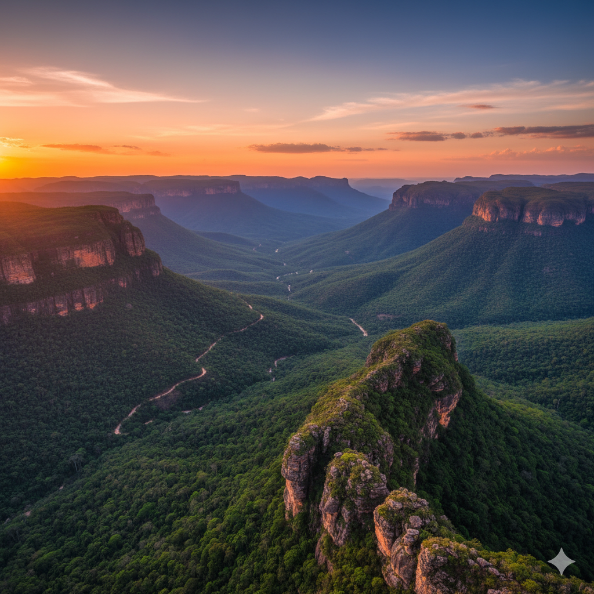
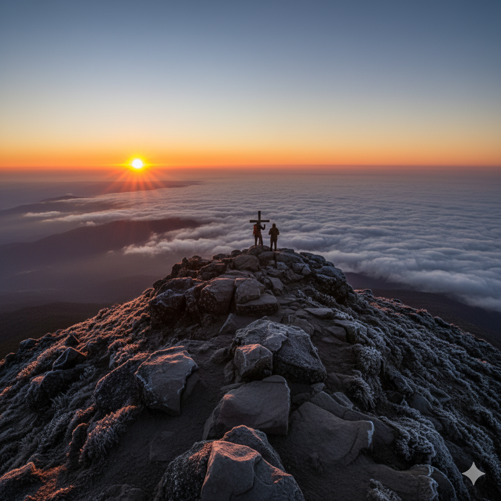
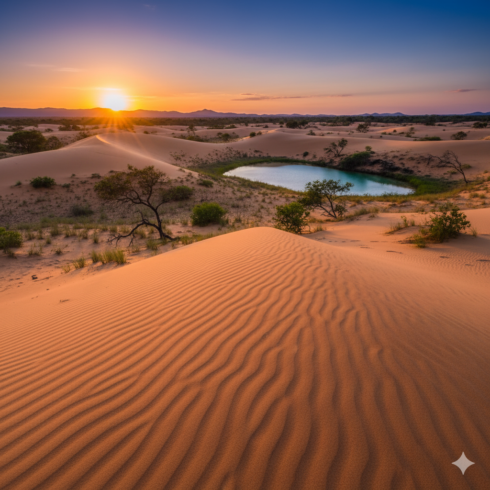
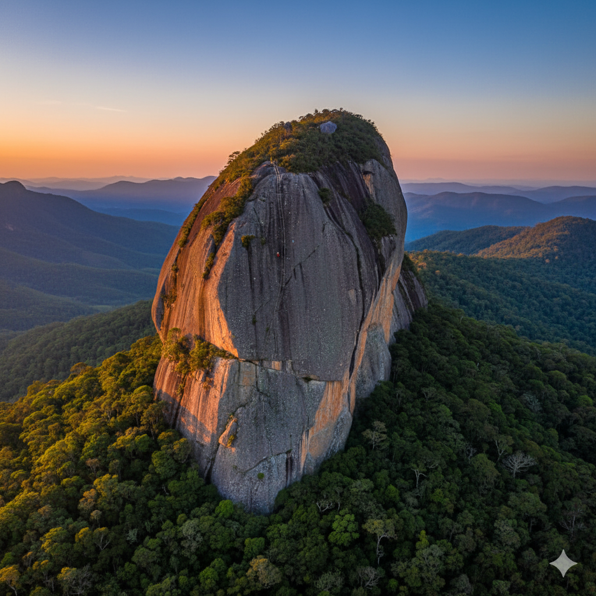
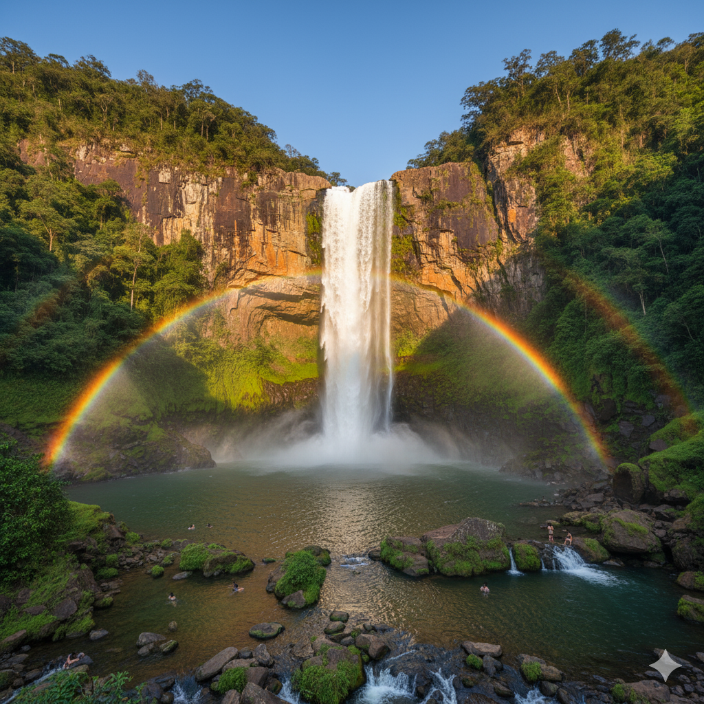

Guias de ecoturismo, trilhas e as paisagens mais selvagens do país
Por Equipe Brasil sem Rumo | Publicado em 11 de Novembro, 2025
⛰️ Guia Completo da Chapada Diamantina: O Que Fazer em 5 Dias

A Chapada Diamantina, na Bahia, é um dos destinos de ecoturismo mais procurados do Brasil. Com mais de 1.500 km² de área protegida, o Parque Nacional abriga cachoeiras espetaculares, grutas milenares, cânions impressionantes e uma biodiversidade única que encanta aventureiros do mundo todo.
Dia 1 - Vale do Capão e Cachoeira da Fumaça: Comece sua aventura pelo Vale do Capão, conhecido por sua comunidade alternativa e energia especial. Faça a trilha até o topo da Cachoeira da Fumaça (6-7h ida e volta, nível moderado) - com 340 metros de queda livre, é a segunda maior cachoeira do Brasil! A vista de cima é de tirar o fôlego, principalmente no fim da tarde quando o sol cria um espetáculo de cores.
Dia 2 - Poço Encantado e Poço Azul: Visite duas das grutas mais famosas do Brasil. O Poço Encantado impressiona quando raios de sol atravessam a abertura natural e iluminam suas águas azul-cristalinas (melhor entre abril e setembro, das 10h às 13h30). No Poço Azul, você pode mergulhar com snorkel nas águas a 24°C - uma experiência surreal! Reserve com antecedência pois há limite de visitantes.
Dia 3 - Morro do Pai Inácio e Cachoeira do Sossego: Acorde cedo para subir o Morro do Pai Inácio ao nascer do sol (30 minutos de caminhada leve). A vista 360° é considerada uma das mais bonitas da Chapada. À tarde, trilhe até a Cachoeira do Sossego (14km ida e volta, 6h) - a trilha é desafiadora mas recompensadora, terminando em uma piscina natural de águas verdes cercada por paredões de pedra.
Dia 4 - Lençóis e Serrano: Explore a charmosa cidade de Lençóis pela manhã, visitando o Mercado Cultural e as lojas de artesanato local. À tarde, faça o Circuito do Serrano: Cachoeira Primavera, Salão de Areias Coloridas e Cachoeira do Sossego (mais próxima, não confundir com a do Dia 3). É uma trilha mais leve, perfeita para recuperar as energias.
Dia 5 - Poço do Diabo e Gruta da Pratinha: Encerre sua aventura com a Cachoeira do Poço do Diabo (90 metros de queda) e a Gruta da Pratinha, onde você pode fazer flutuação em águas cristalinas entre formações rochosas. Se tiver tempo, visite também a Gruta Azul, menor mas igualmente bonita.
🎒 O Que Levar:
Obrigatório: Tênis de trilha, protetor solar, repelente, chapéu, mochila de hidratação (2-3L)
Roupas: Roupas leves, mas leve também um casaco (noites frias na serra)
Snacks: Barras de cereal, frutas secas, chocolate
Equipamentos: Bastão de caminhada, lanterna de cabeça, kit primeiros socorros
Documentos: RG, cartão de crédito, dinheiro em espécie (poucos lugares aceitam cartão)
💰 Orçamento Estimado (5 dias):
Hospedagem em Lençóis: R$ 100-200/dia (pousada média)
Alimentação: R$ 80-120/dia
Guias e ingressos: R$ 600-900 (total)
Transporte interno: R$ 200-300 (aluguel de carro recomendado)
Total: R$ 1.500 - 2.500 por pessoa
Por Bruno Rocha | Publicado em 9 de Novembro, 2025
🏔️ Como se Preparar para a Trilha do Pico da Bandeira

Com 2.892 metros de altitude, o Pico da Bandeira é o terceiro ponto mais alto do Brasil (atrás apenas do Pico da Neblina e Pico 31 de Março, ambos inacessíveis ao turismo regular). Localizado na divisa entre Minas Gerais e Espírito Santo, dentro do Parque Nacional do Caparaó, conquistar seu cume é uma experiência transformadora que exige preparação física e mental.
A Trilha: O percurso clássico começa em Tronqueira (1.970m) e tem 9 km até o cume (ida e volta: 18 km). A subida ganha 920 metros de altitude e leva de 4 a 6 horas para subir, dependendo do seu condicionamento. O ideal é iniciar a caminhada por volta das 2h-3h da madrugada para ver o nascer do sol no topo - um espetáculo inesquecível!
Preparação Física (8-12 semanas antes):
Semanas 1-4: Caminhadas de 5-8 km, 3x por semana, em terreno plano. Adicione academia 2x/semana (fortalecimento de pernas e core)
Semanas 5-8: Aumente para 10-12 km, inclua subidas/escadas. Faça pelo menos uma trilha de montanha aos finais de semana
Semanas 9-12: Treinos específicos: suba escadas com mochila (5-8 kg), faça trilhas mais longas (15+ km). Uma semana antes, reduza a intensidade (descanso ativo)
Equipamentos Essenciais:
Tênis ou bota de trilha (amaciado!)
Mochila 25-30L com capa de chuva
Sistema de camadas: camiseta dry-fit, fleece, jaqueta impermeável
Calça de trilha (evite jeans)
Luvas, gorro e buff (faz MUITO frio no topo, pode chegar a -5°C)
Lanterna de cabeça (essencial para início de madrugada)
Bastões de trekking (ajudam muito na descida)
2-3L de água + isotônico
Snacks energéticos (barra de cereal, chocolate, frutas secas)
No Dia da Trilha: Tome um café reforçado mas leve (2h antes). Use a técnica "camadas de cebola" - comece com bastante roupa (madrugada é gelada) e vá tirando conforme aquecer. Mantenha ritmo constante, não se apresse. Beba água a cada 15-20 minutos. No topo, coloque TODAS as camadas de volta - o vento é forte e gelado!
⚠️ Avisos Importantes:
É OBRIGATÓRIO contratar guia credenciado - não tente subir sozinho
Reserve com pelo menos 1 mês de antecedência (limite de visitantes diário)
Mal de altitude é real: descanse em Tronqueira 1 dia antes da subida
Não há sinal de celular - avise família antes
Leve todo seu lixo de volta - preserve o parque!
Por Equipe Brasil sem Rumo | Publicado em 7 de Novembro, 2025
🌊 Aventura no Jalapão (TO): Deserto de Dunas e Fervedouros

O Jalapão é um dos destinos mais exóticos do Brasil, localizado no Tocantins. Com dunas alaranjadas que parecem desertos, cachoeiras cristalinas, fervedouros (nascentes de água que te "flutuam"), e formações rochosas únicas, o parque oferece uma experiência de aventura incomparável. É o Brasil que poucos conhecem!
Fervedouros - A Atração Mais Famosa: Fenômeno raro no mundo! São nascentes de água que brotam do fundo arenoso com tanta pressão que é impossível afundar - você literalmente flutua sentado. Os principais são o Fervedouro do Ceiça e Fervedouro Bela Vista. A água está sempre a 24°C, mesmo em dias quentes. É permitido apenas colete salva-vidas para não danificar as nascentes.
Dunas do Jalapão: Com até 40 metros de altura e quilômetros de extensão, as dunas alaranjadas são perfeitas para sandboard (surfe na areia). O melhor horário é fim de tarde, quando o sol cria um espetáculo de sombras e cores. Dica: suba descalço, a areia está sempre quentíssima!
Cachoeiras Imperdíveis:
Cachoeira da Velha: Com 100m de largura, é uma das mais largas do Brasil. Forma várias quedas em degraus - espetacular!
Cachoeira do Formiga: Pequena mas com água azul-turquesa incrível, ótima para banho
Cachoeira da Sonrisal: Forma uma piscina natural efervescente (daí o nome)
Como Visitar: O Jalapão não tem estrutura turística desenvolvida. Você precisa contratar uma agência especializada para expedições 4x4 (não é possível visitar por conta própria). Os pacotes geralmente são de 4-6 dias, incluem acampamento (não há hotéis dentro do parque), todas as refeições e guias. Prepare-se para MUITA poeira - leve roupas que possam sujar!
Melhor Época: Maio a setembro (seca). Evite outubro a abril quando os acessos ficam intransitáveis pela chuva. Junho e julho são os meses mais procurados, com temperaturas amenas (20-28°C). Noites podem ser frias (15°C).
🏕️ O Que Saber Sobre Camping:
Agências fornecem barracas, colchonetes e toda alimentação
Banheiros são "de camping" (rústicos, mas limpos)
Leve lanterna de cabeça, repelente forte e protetor solar FPS 50+
Não há energia elétrica - carregadores portáteis são essenciais
O céu estrelado é inesquecível - leve um app de astronomia!
Por Ana Silva | Publicado em 4 de Novembro, 2025
🥾 Trilha da Pedra do Baú (SP): Aventura Pertinho de São Paulo

A apenas 170 km de São Paulo, na cidade de São Bento do Sapucaí, a Pedra do Baú é um dos pontos mais procurados para trekking e escalada na região. Com 1.950 metros de altitude, a formação rochosa se destaca na paisagem da Serra da Mantiqueira como um "baú" gigante - daí seu nome. É perfeita para um bate-volta desde a capital!
A Trilha: Existem duas formas de chegar ao topo: pela trilha (mais fácil, 2-3h de subida) ou pela escalada (classe II-III, requer experiência). A trilha começa na base do parque e sobe de forma gradual por 4 km através da mata atlântica. Os últimos 100 metros são um pouco mais íngremes com auxílio de correntes fixas na rocha.
No Topo: A vista 360° é de tirar o fôlego! Você enxerga o Vale do Paraíba, outras formações rochosas da região (Bauzinho, Ana Chata) e, em dias claros, até a Serra do Mar. O topo é pequeno (cerca de 15m²), então não vá em feriados se quiser aproveitar com calma. A famosa "foto sentado na beirada" é obrigatória (mas tenha cuidado - o vento pode ser forte!).
Dicas Práticas:
Horário: Comece cedo (7h-8h) para evitar o sol forte na subida e ter luz boa para fotos
Ingresso: R$ 15 por pessoa, compre na portaria (só dinheiro)
Estacionamento: R$ 10, fica a 4km da base da trilha (pode ir de carro ou van do parque)
Tênis: Trilha ou corrida com boa aderência (há trechos escorregadios)
Água: Leve pelo menos 1,5L por pessoa
Lanche: Não há venda no parque, leve seu próprio lanche
Roteiro Combo: Aproveite para conhecer outras atrações da região: Campos do Jordão (30 km), Pico dos Marins (trilha mais desafiadora), e o charmoso centro de São Bento do Sapucaí com ótimos restaurantes. Muita gente faz base em Campos do Jordão e visita a Pedra do Baú como um dos dias do roteiro.
Por Carlos Mendes | Publicado em 1 de Novembro, 2025
💎 Ecoturismo na Serra da Canastra (MG): Cachoeiras e Queijo

Famosa pela nascente do Rio São Francisco e pelo tradicional queijo canastra (patrimônio cultural brasileiro), a Serra da Canastra em Minas Gerais é um destino que combina perfeitamente natureza exuberante e gastronomia de qualidade. O Parque Nacional protege 200 mil hectares de cerrado, cachoeiras impressionantes e uma fauna rica, incluindo o raro lobo-guará.
Cachoeira Casca d'Anta: A estrela do parque! Com 186 metros de altura, é uma das mais altas de Minas Gerais e pode ser vista de dois pontos: da parte de cima (Mirante da Casca d'Anta, vista panorâmica incrível) e da parte de baixo (caminhada de 8 km ida e volta, onde você fica aos pés da queda). Faça os dois - são experiências completamente diferentes!
Nascente do Rio São Francisco: Comece sua visita pelo "Velho Chico"! É emocionante ver onde nasce este rio tão importante para o Brasil. A nascente oficial fica em um olho d'água cercado por vegetação, e há uma estrutura interpretativa explicando a importância do rio.
Circuito de Cachoeiras:
Cachoeira do Fundão: Trilha curta (1,5 km), ótima para banho
Cachoeira dos Rolinhos: Várias quedas em sequência formando piscinas naturais
Cachoeira da Chinela: Formato peculiar que lembra uma chinela
Rota do Queijo Canastra: Após os passeios naturais, visite produtores artesanais de queijo! O queijo canastra é produzido há mais de 200 anos com receita transmitida de geração em geração. Você pode fazer degustações e comprar direto na fazenda (preço bem melhor). Harmonize com doce de leite e cachaça artesanal mineira!
Onde Ficar: As cidades-base são São Roque de Minas (mais estrutura) e Capitólio (acesso mais fácil ao parque). Há também pousadas rurais dentro do parque para quem quer acordar no meio da natureza.
🧀 Compras Recomendadas:
Queijo Canastra meia-cura (conserva melhor em viagem)
Doce de leite artesanal (o da região é excepcional)
Cachaça artesanal mineira
Mel silvestre do cerrado
Artesanato local (bordados, cestarias)
Dica: Leve uma caixa de isopor no carro para conservar queijos e doces!